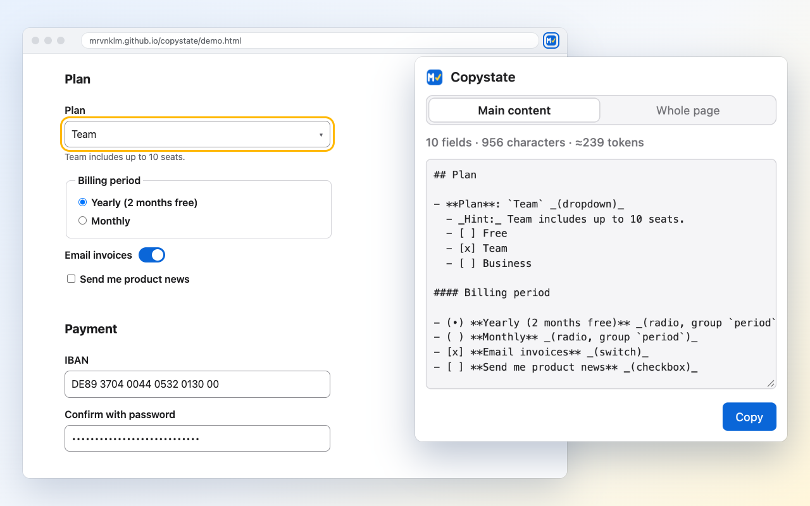

Give your AI the page as you see it
Copystate copies the current page as Markdown: text, tables, links and every form field with its value and the options of its dropdowns, including custom ones. Paste it into any AI assistant and ask about the form you are filling in.

How it works
| 1. Open | Click the toolbar icon or press Alt+Shift+M (Option+Shift+M on macOS). Copystate reads the page and shows a preview with
fields, characters and a rough token count. Nothing on the page is touched and nothing is copied yet. |
|---|---|
| 2. Dropdowns | Some dropdowns only show their options while open. If the page has such dropdowns, Open dropdowns opens each one briefly and closes it again. Nothing gets selected or submitted. |
| 3. Copy | Click Copy or press Enter. The Markdown is on your clipboard. |
Example output
Excerpt for the demo page after Open dropdowns:
# Account settings · Copystate demo URL: https://mrvnklm.github.io/copystate/demo.html ## Plan - **Plan**: `Team` _(dropdown)_ - _Hint:_ Team includes up to 10 seats. - [ ] Free - [x] Team - [ ] Business #### Billing period - (•) **Yearly (2 months free)** _(radio, group `period`)_ - ( ) **Monthly** _(radio, group `period`)_ ## Payment - **IBAN**: `[redacted]` _(text)_ - **Confirm with password**: `[redacted]` _(password)_
Privacy
Copystate runs entirely in your browser. It sends nothing anywhere: no network requests, no analytics, no account. Form fields for passwords, card numbers, IBANs, one-time codes and tokens are redacted, as are credentials and tokens in link URLs. Details: privacy policy.
Support
Questions and bug reports: GitHub issues. If a page is read wrongly, please include the URL or a snippet of its HTML.